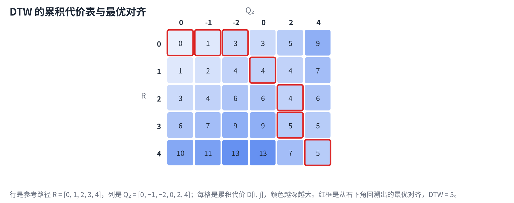
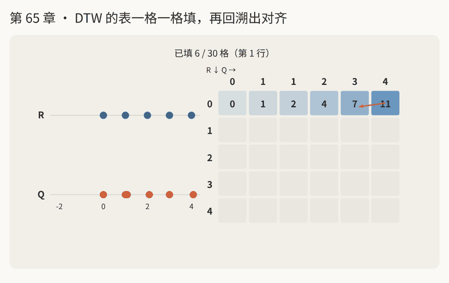

第 65 章 · VLN 的几何与评测：DTW、nDTW、SDTW、SPL、前沿探索、VLMaps
本地运行
git clone https://github.com/wikieden/math-and-eval-stats
cd math-and-eval-stats/code/notebooks
pip install jupyterlab torch numpy
jupyter lab ch65_vln_metrics.ipynb也可以下载后直接用 VS Code 打开 .ipynb 运行。需要 GPU 的章节在 Colab 里选「代码执行程序 → 更改运行时类型 → GPU」。
本章回答：两个智能体都走到了终点，一个照着指令走、一个先走反再绕回来，成功率一样，怎么区分？DTW 的动态规划表怎么填？nDTW 为什么要除以 |R|·d_th 再取指数？SPL 惩罚的是什么？没有地图时，“前沿”是哪些格子？VLMaps 怎么把“沙发”这个词落到俯视地图的某个格子上？
讲解日期：2026-11-25 · 上一章：第 64 章 多传感器标定与对齐 · 下一章：第 66 章 VLN 的序列决策
对应原文：nDTWmath-and-eval-stats/materials/text/papers/ndtw-path-similarity-1907.05446.txt（式 (2) nDTW = exp(−DTW/(|R|·d_th))，L95–L105；SDTW = SR · nDTW，L135；二次时间复杂度，L107）；SPLembodied-nav-eval-spl-1807.06757.txt（式 (1) 与三个例子，L160–L178）；VLMapsvlmaps-2210.05714.txt（深度像素反投影到俯视栅格，L125–L178）
本章缩写：VLN = Vision-and-Language Navigation（视觉-语言导航）；R2R = Room-to-Room（房间到房间，VLN 基准）；DTW = Dynamic Time Warping（动态时间规整）；nDTW = normalized Dynamic Time Warping（归一化 DTW）；SDTW = Success weighted by normalized Dynamic Time Warping（按 nDTW 加权的成功率）；SR = Success Rate（成功率）；SPL = Success weighted by Path Length（按路径长度加权的成功率）；d_th = threshold distance（成功判定的距离阈值）；VLMaps = Visual-Language Maps（视觉-语言地图）。全部缩写见 附录 · 缩写与术语表
VLN 的任务定义和各类基准见《具身导航》第 1 章；这里只讲评测指标和几何部分的数学。
讲解
第一步：DTW：两条快慢不同的路径怎么对齐（2026-11-25）
类比：两个人唱同一首歌，一个唱得快、一个在某句拖长了。逐秒比较会觉得差很多，但只要允许“一个人的一秒对上另一个人的两秒”，就能看出唱的其实是同一首。DTW 就是找最好的这种对齐。
参考路径 \(R = (r_1,\dots,r_n)\)、智能体路径 \(Q = (q_1,\dots,q_m)\)。对齐是一条从 (1, 1) 走到 (n, m) 的单调路径（每步向右、向下或斜下），DTW 是所有对齐里距离和最小的：
动态规划，O(nm) 时间（L107）。
例子（一维走廊，参考 R = [0, 1, 2, 3, 4]；d = |r − q|）：
Q₁ = [0, 1, 1, 2, 3, 4]（中途犹豫了一下）：
| 0 | 1 | 1 | 2 | 3 | 4 | |
|---|---|---|---|---|---|---|
| 0 | 0 | 1 | 2 | 4 | 7 | 11 |
| 1 | 1 | 0 | 0 | 1 | 3 | 6 |
| 2 | 3 | 1 | 1 | 0 | 1 | 3 |
| 3 | 6 | 3 | 3 | 1 | 0 | 1 |
| 4 | 10 | 6 | 6 | 3 | 1 | 0 |
Q₂ = [0, −1, −2, 0, 2, 4]（先走反了，再折回来）：
| 0 | −1 | −2 | 0 | 2 | 4 | |
|---|---|---|---|---|---|---|
| 0 | 0 | 1 | 3 | 3 | 5 | 9 |
| 1 | 1 | 2 | 4 | 4 | 4 | 7 |
| 2 | 3 | 4 | 6 | 6 | 4 | 6 |
| 3 | 6 | 7 | 9 | 9 | 5 | 5 |
| 4 | 10 | 11 | 13 | 13 | 7 | 5 |
Q₁ 的 DTW = 0：原地多停一步不算偏离（重复的 1 对上 R 里同一个 1）。Q₂ 的 DTW = 5：走反的那两步怎么对齐都要付代价。两条路径终点都是 4。

图 65-1 · Q₂ 对 R 的累积代价表 D（颜色越深代价越大），红线是回溯出的最优对齐路径；走反的那两列（−1、−2）只能对上 R 的开头，代价在那里积累一句话：DTW 用动态规划找两条路径之间代价最小的单调对齐，允许快慢不同，但偏离路线要付代价。
第二步：nDTW 与 SDTW：把 DTW 变成 0 到 1 的分数（2026-11-25）
DTW 的数值随路径长度和场景大小变化，没法跨回合平均。nDTW（式 (2)，L95–L105）：
除以参考路径点数 |R|（平均到每个点）和成功阈值 d_th（R2R 里是 3 m，换成“相当于几个阈值”），再取负指数映射到 (0, 1]，完全贴合时等于 1。SDTW（L135）只给成功的回合算分：\(\text{SDTW} = \text{SR}\cdot\text{nDTW}\)。
例子（|R| = 5、d_th = 3）：
| 路径 | DTW | nDTW | 到终点 | SDTW |
|---|---|---|---|---|
| Q₁ | 0 | 1.0000 | 是 | 1.0000 |
| Q₂ | 5 | 0.7165 | 是 | 0.7165 |
成功率看不出两者的差别，nDTW 看得出来：VLN 要评的不只是“到没到”，还有“是不是照着指令说的路走的”。
一句话：nDTW = exp(−DTW/(|R|·d_th))，把路径贴合度归一到 (0, 1]；SDTW 再乘上是否成功。
第三步：SR 与 SPL：到了，但绕了多远（2026-11-25）
SPL（式 (1)，L160–L170）：
\(S_i\) 是否成功，\(\ell_i\) 是最短路长度，\(p_i\) 是实际走的长度。成功且走最短路得 1，成功但走了两倍远得 0.5，失败得 0。原文的三个例子（L168–L178）：一半成功且都走最短路 → 0.5；全部成功但都走两倍远 → 0.5；一半成功且走两倍远 → 0.25。
例子（4 个回合）：
| 回合 | 成功 | ℓ（最短） | p（实际） | 这一回合的项 |
|---|---|---|---|---|
| 1 | 1 | 10 | 10 | 1.000 |
| 2 | 1 | 10 | 15 | 0.667 |
| 3 | 0 | 8 | 20 | 0 |
| 4 | 1 | 12 | 24 | 0.500 |
| SR = 0.75，SPL = 0.5417 |
SPL 只看长度、不看路线：“绕一个大圈到终点”和“照指令走了一条稍长的路”可能得同样的 SPL。所以导航到目标的任务（ObjectNav、PointNav）主要看 SPL，按指令走路线的 VLN 还要看 nDTW / SDTW。和第 1–7 章一样，这些都是回合级的平均，回合数少时要带置信区间（每回合的 SPL 在 [0, 1]，可以用 bootstrap，第 5 章）。
一句话：SPL = 成功 × 最短路 / 实际路长，再对回合平均；它惩罚绕路，但不管路线对不对。
第四步：拓扑图与前沿探索（2026-11-25）
拓扑图：VLN-CE 等连续环境里，常把可达的位置抽成节点（全景视点），相邻的连边，规划就是图搜索（第 58 章的 Dijkstra / A*）；每个节点存视觉 / 语言特征，策略在节点之间选。
前沿探索：没有地图时，在占用栅格（第 57 章）上找“已知空闲、但挨着未知”的格子，叫前沿；去最近的（或信息增益最大的，第 66 章）前沿，就是最经典的探索策略。
例子（5 × 6 栅格：0 空闲、1 障碍、−1 未知）：
0 0 0 1 -1 -1
0 0 0 1 -1 -1
0 0 0 0 -1 -1
1 1 0 0 0 -1
-1 -1 0 0 0 -1
前沿（上下左右至少有一个未知格的空闲格）：(2, 3)、(3, 4)、(4, 2)、(4, 4)，共 4 个。障碍格旁边的未知不算（隔着墙看不过去，也走不过去）。
图 65-2 · 白：已知空闲；黑：障碍；灰：未知；橙色：前沿格子。机器人下一步去哪个前沿，由距离和预计能看到多少新区域决定
一句话：拓扑图把规划变成图搜索；前沿 = 挨着未知的空闲格，去前沿就是在扩大已知区域。
第五步：VLMaps：把语言特征投到俯视地图（2026-11-25）
VLMaps（L125–L178）：每一帧 RGB-D 里，像素级的视觉-语言特征（LSeg，和 CLIP 文本嵌入对齐，第 62 章）按深度反投影到三维（第 52 章），再投到俯视栅格；同一个格子被多帧看到就取平均。查询时把“沙发”过文本编码器，和每个格子的特征算余弦相似度，最高的格子就是沙发的位置。
例子（一条图像行，f = 100、c_x = 50；4 个像素，格子 1 m）：
| 像素列 u | 深度 z | 投到的格子 | 特征 |
|---|---|---|---|
| 30 | 2.0 | (−1, 2) | [0.9, 0.1, 0.0] |
| 35 | 2.1 | (−1, 2) | [0.8, 0.2, 0.1] |
| 70 | 3.0 | (0, 3) | [0.1, 0.9, 0.2] |
| 80 | 3.2 | (0, 3) | [0.2, 0.8, 0.1] |
格子 (−1, 2) 的平均特征 [0.85, 0.15, 0.05]，格子 (0, 3) 的是 [0.15, 0.85, 0.15]。查询“沙发”（文本嵌入 [1, 0, 0]）→ 格子 (−1, 2)；“电视”（[0, 1, 0]）→ 格子 (0, 3)。“去沙发和电视之间”就变成在地图上找这两个格子再规划路径。
一句话：VLMaps 用深度把像素的视觉-语言特征反投影到俯视栅格并平均，查询一个词就是找余弦相似度最高的格子。
动画演示：DTW 的表一格一格填，再回溯出对齐

可交互版：animations/65-vln-metrics.html（下拉切换 Q₁ / Q₂；滑块调已经填了多少格）。
怎么看：
- 左边是两条一维路径，右边是累积代价表 D（第一步）；
- 表按行一格一格填，每格 = 本格距离 + 左、上、左上三格中最小的那个（箭头标出来源）；
- 填完后从右下角回溯，红线就是最优对齐，左边的连线显示 R 和 Q 的哪些点被配成一对；右上角给出 DTW 和 nDTW。
练习与作答记录
题 1（第一步）：R = [0, 1, 2]、Q = [0, 2, 2]，填 DTW 表，DTW 是多少？
作答：（待作答）
题 2（第三步）：3 个回合 (成功, ℓ, p) = (1, 5, 5)、(1, 6, 9)、(0, 4, 4)，SR 和 SPL 各是多少？
作答：（待作答）
题 3（第二步）：同一条 Q，把 d_th 从 3 m 改成 1 m，nDTW 变大还是变小？为什么 nDTW 要用 d_th 归一化？
作答：（待作答）
口诀
DTW 填表取三邻最小，快慢可对、偏离要付；
除以点数乘阈值、取负指数，nDTW 落在零到一；成功再乘，就是 SDTW；
SPL 是成功乘最短比实际，罚绕路不管路线；
前沿是挨着未知的空闲格；
VLMaps 反投影求平均，查词就找余弦最高的格。
本章复习卡片
ST210（DTW 的递推与 nDTW / SDTW 的定义）、ST211（SPL 的定义与它不管什么）、ST212（前沿的定义；VLMaps 的反投影与查询）。练习做完后，按答错、卡住的地方补上。
附录 · 延伸阅读
留给以后深入学习用，不影响本章主线。★ 是建议先读的。
推荐阅读
| 读什么 | 读哪里 | 读它为了什么 |
|---|---|---|
| ★ Ilharco 2019（nDTW） | §3（L95–L135） | nDTW 与 SDTW 的定义和动机 |
| ★ Anderson 2018（SPL） | §4（L160–L186） | SPL 的定义与推荐做法 |
| VLMaps（Huang 2023） | §3（L125–L178） | 语言特征的俯视地图 |
| 《具身导航》第 1 章 | 全部 | VLN 的任务谱系 |
| 第 57 章 地图、第 58 章 路径规划 | 占用栅格、A* | 前沿与图搜索的基础 |
| 第 1–7 章 评测统计 | 全部 | 指标的置信区间与比较 |
数学原理
- DTW 的最优子结构：到 (i, j) 的最优对齐必然经过 (i − 1, j)、(i, j − 1)、(i − 1, j − 1) 之一的最优对齐，所以可以动态规划。
- DTW 不是度量：不满足三角不等式；Q 重复 R 的点不增加代价。
- nDTW 的归一化：DTW/|R| 是“每个参考点的平均偏离”，再除以 d_th 变成无量纲。
- SPL 的上界：每回合 ≤ S_i，所以 SPL ≤ SR。
公式清单
| 公式 | 意思 |
|---|---|
| \(D[i,j] = d(r_i, q_j) + \min(D[i-1,j], D[i,j-1], D[i-1,j-1])\) | DTW 递推 |
| \(\text{nDTW} = \exp(-\text{DTW}/(\lvert R\rvert d_{th}))\) | 归一化 DTW |
| \(\text{SDTW} = S\cdot\text{nDTW}\) | 只算成功回合 |
| \(\text{SPL} = \frac1N\sum S_i\ell_i/\max(p_i,\ell_i)\) | 按路径长度加权的成功率 |
| \(x = (u - c_x)z/f\) | 像素反投影 |
代码对照：把本章的数字用代码算一遍
代码在仓库本地
math-and-eval-stats/solutions/chapter-code/ch65_vln_metrics.py，配套测试tests/test_ch65.py：
bash cd math-and-eval-stats/solutions/chapter-code uv run python ch65_vln_metrics.py uv run pytest tests/test_ch65.py
讲义 ↔ 代码：
| 讲义 | 公式 | 写法 | 跑出来 |
|---|---|---|---|
| 第一步 DTW | 动态规划 | dtw_table(r, q) |
0、5 |
| 第二步 nDTW | 负指数 | ndtw(dtw, n_ref) |
0.7165 |
| 第三步 SPL | 加权平均 | spl() |
SR 0.75，SPL 0.5417 |
| 第四步 前沿 | 邻接未知 | frontiers() |
4 个 |
| 第五步 VLMaps | 反投影 + 余弦 | vlmap()、query() |
沙发 (−1, 2)、电视 (0, 3) |
关键几行：
D[i, j] = abs(r[i - 1] - q[j - 1]) + min(D[i - 1, j], D[i, j - 1], D[i - 1, j - 1]) # DTW 递推
return sr, sum(s * l / max(p, l) for s, l, p in eps) / len(eps) # SPL
x = (u - CX) * z / FX # 反投影到相机坐标
代码里才看得到的 3 件事：
- 边界用 inf：D 多开一行一列、除 (0, 0) 外都填 inf，保证对齐必须从两条路径的第一个点开始。
- max(p, ℓ) 防止“比最短路还短”：定位噪声或连续环境里 p 可能略小于 ℓ，不取 max 会得到大于 1 的分数。
- 只用了一维数列：在 R2R 风格的二维玩具轨迹上实现并测试 DTW / nDTW / SPL，留给里程碑 ME-M36。
自己改一改（不影响练习答案）：
- 把 Q₂ 改成 [0, 0, 0, 1, 2, 3, 4]（在起点停了两步），DTW 是多少？
- 给
GRID再加一列未知格，前沿有几个？